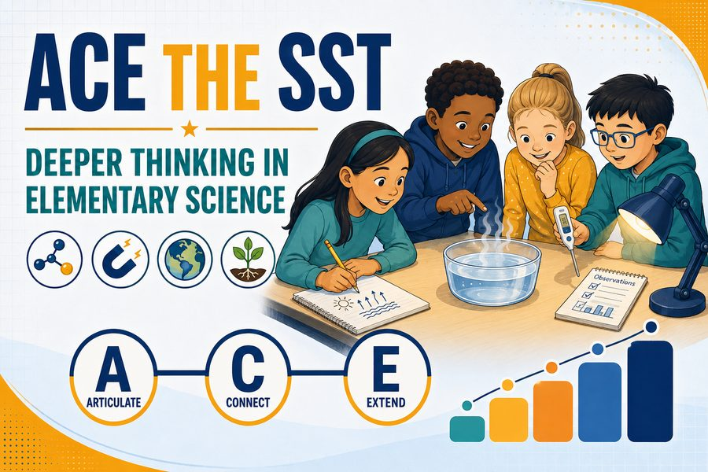
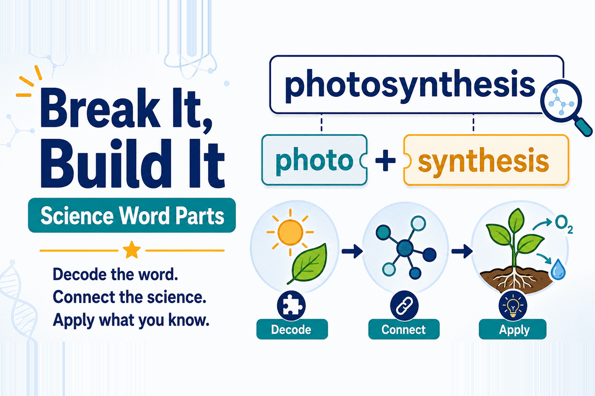
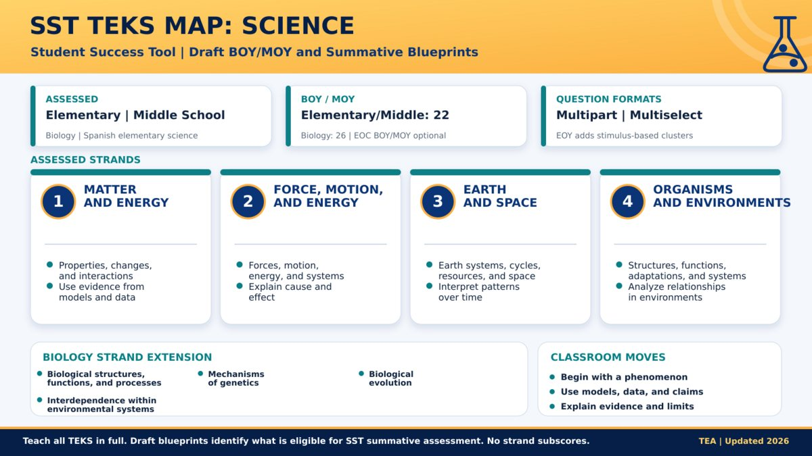
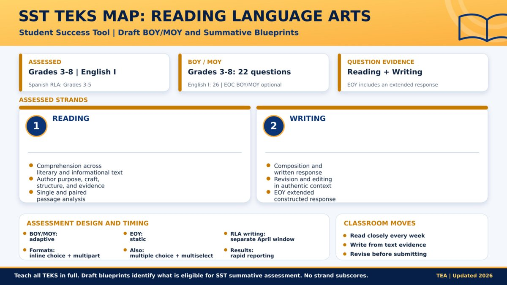
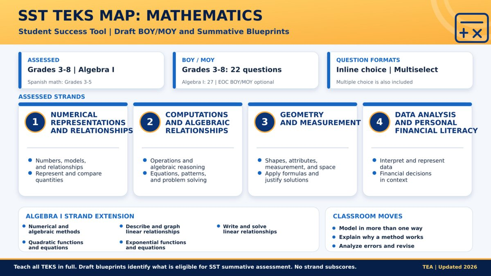
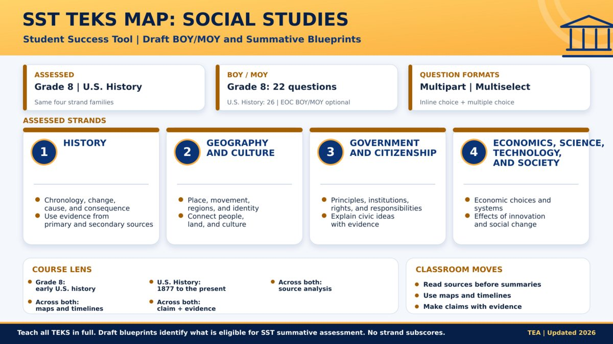

Choose an activity set
Both sets are built for the same thing the draft science blueprints ask for: read a stimulus, use evidence, explain your reasoning. More sets are planned.

ACE the SST — Elementary Science
Paired entry and exit tickets built on the ACE framework: Articulate, Connect, Extend. Filter by grade and SST science strand, flip between student and teacher views, and score the response with a SOLO guide that names the next instructional move.
Open ACE the SST →
Break It, Build It — Science Word Parts
Students use Greek and Latin word parts to predict what an unfamiliar science term means, then test that prediction against a diagram, a passage, or data — and revise it when the science disagrees. Twelve printable activities for grades 3–5, in colour and in a black-and-white edition built for a grayscale copier, each with a teacher key.
Open Break It, Build It →More SST activity sets
The Break It, Build It word-part collection now spans grades 3–12. Next are the remaining high-school courses — Physics and Earth and Environmental Science — plus activity sets for other content areas, each following the same pattern: a short thinking routine, a teacher look-for, and a scoring guide that points to the next move.
From STAAR to SST: what actually changes
Texas is replacing STAAR with the Student Success Tool. The question most teachers ask first is whether they have to rebuild their course. They do not. What changes is when students are assessed, how quickly results come back, and how much of the reasoning has to be visible.
Get the timeline straight
- STAAR remains in place through the 2026–2027 school year.
- Under House Bill 8, SST begins in 2027–2028 with beginning-, middle-, and end-of-year assessments. Grades 3–8 use all three checkpoints.
- BOY and MOY are optional for the Algebra I, Biology, English I, and U.S. History end-of-course assessments.
- BOY and MOY are adaptive. EOY is static, so its questions can be released.
- RLA writing has a separate April window, with other EOY testing in May.
- TEA says results must reach school systems within two business days after the testing window closes.
- The English II EOC is eliminated beginning in 2027–2028, though the graduating classes of 2026 and 2027 still have it as a graduation requirement.
TEA places the same warning on each draft blueprint: all student expectations must still be taught in full. A blueprint identifies the TEKS eligible for the state summative assessment. It is a planning aid, not permission to skip everything that does not fit neatly inside one strand.
Turn three checkpoints into one teaching loop
| Checkpoint | Teacher move | Practical question |
|---|---|---|
| BOY | Identify unfinished learning and establish a baseline | What support does each student need first? |
| MOY | Regroup, reteach, and adjust scaffolds | What changed, and what is still getting in the way? |
| EOY | Review mastery, growth, and remaining gaps | What should the next teacher know? |
Your first move is small: bookmark the TEA House Bill 8 page, download the blueprint for your grade or course, and bring one strand to your next planning meeting.
Four TEKS maps
One page per subject, drawn from the draft BOY/MOY and summative blueprints: what is assessed, how many questions, the strand families, and the classroom moves each one rewards. Open an image to see it full size.

Science: build explanations from evidence
Elementary and middle school share four strand families. The summative science blueprints call for stimulus-based clusters, so students need practice interpreting models and data and then using that evidence to explain what is happening.

Reading Language Arts: keep reading and writing together
Two reporting strands, reading and writing. The summative blueprint adds an extended constructed response, which makes regular evidence-based writing, revision, and editing more useful than a late burst of isolated test practice.

Mathematics: make reasoning visible
Four strand families across grades 3–8, with Algebra I adding linear, quadratic, and exponential relationships. Use multiple representations, ask students to explain why a method works, and make error analysis routine.

Social Studies: put sources before summaries
Grade 8 and U.S. History use the same four strand families. Students should work regularly with maps, timelines, primary sources, and competing claims. A worksheet of disconnected dates will not build the source analysis these strands demand.
How the activities connect to the maps
The science map is the one these activities were built against. Its four strand families and its call for stimulus-based clusters point at the same skill: read a model, a data table, or a passage, and use it as evidence for an explanation. Formats change; that skill does not.
A student who can only recall a definition stalls the moment a question changes one condition. Both activity sets are designed around that gap, using the same three moves:
- Articulate — explain what happened in your own words.
- Connect — tie the evidence to the underlying concept.
- Extend — predict what changes when one condition changes.
Which set to reach for
- ACE the SST when the science content is the point — a lesson on the water cycle, forces, food webs. Entry ticket before, exit ticket after, in seven languages.
- Break It, Build It when the vocabulary is what is blocking students — when they can read the passage but stall on hydrosphere, photosynthesis, geothermal. Printable, colour or black and white.
Both score the thinking with the same four-level guide, so a teacher using both sees one progression rather than two vocabularies.
Nothing here is SST-approved, official SST practice, or a reproduction of an SST item. Every stimulus was written for these activities. The BOY / MOY / EOY progression used across this area is a local instructional approach for SST readiness, not a TEA requirement.